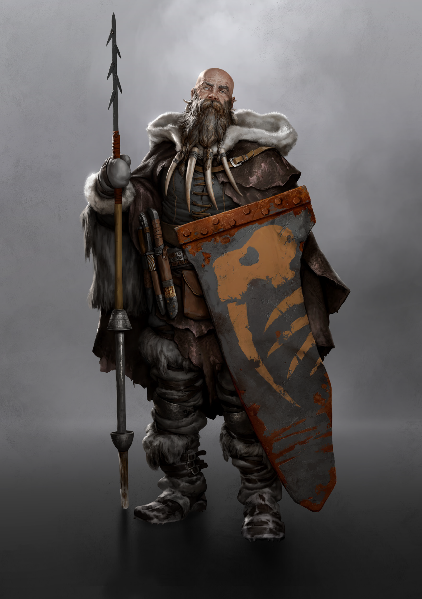

CLAN DOSSIER
Britoni
The Clan has weathered worse storms before.
Clans of the Frontier pp. 9–11

TROUBLED WATERS
Briefing
“How many?” Brocar was eying the hooded hunter with suspicion.
“Eighteen. Women and children,” he replied, opening his coat and tapping an ornate piece of ivory. A sign of brotherhood.
Brocar sighed woefully. “Our home is gonna run dry of blood, soon. Listen, I can bring them to the Seine delta, but they’re on their own from there.” The hunter nodded. “Crime?” Brocar inquired.
“Wrong bloodline. You know it’s madness out there. Brother against brother.”
Brocar spat out a lump of tobacco. “Death to the Oppolids. They’ll drag us all to hell.”
“What’s the alternative? You wanna join Yasen’s mass conversion?” the hunter asked with a smirk. “You better look out for yourself, Brocar. They’ll come for you next."
Troubled Waters
Chaos has erupted across Briton. The wind of change billows up into a hurricane and the Britoni are struggling to reach the eye of the storm. The 12th Day of Ganaress spiraled into a disgraceful charade of aftereffects, one worse than the next. The King is dead, and the Anabaptists have viciously expelled the Spitalians from Northwestern Franka. Now, the Britoni look at their brothers in arms with concern and suspicion. The Broken Cross has always been closely allied with the Cult of Doctors, if the Anabaptists were so rapidly willing to abandon such a close relationship, can the Britoni really be so secure in their own companionship with the Cult?
Less than a year ago the Britoni could cast their doubts and worries into the hands of their King and trust his judgement; even in the darkest hour Oppolus would rule wisely. His loss is a harpoon piercing the hearts of his people. Once his whelps stepped up, the ancestral territory became a country divided by bloody feuds, each patch of soil ruined by another skewed idea of princedom. For now, the Clan accepts its new leaders by virtue of their heritage, but if the Oppolids want their control to stabilise they’ll need to prove themselves by navigating the current turmoil.
Ultimately, the Britoni need the Oppolids far less than their proclaimed rulers need subjects. The Clan has weathered worse storms before, and this rugged nature is a point of pride for Briton’s kinsfolk. If Oppolus’ offspring threaten to capsize the ship, they’ll be tossed overboard with the rest of the useless baggage.
The Widest Net
Belonging to the Britoni is more than just braiding one’s hair and daubing the Clan’s insignia on any and every available surface. Their spirit is ingrained in the very landscape of the Northwest of Franka, runes carved into the rock formations telling their story throughout the ages. Hunters, farmers, craftsmen, tailors, furriers, blacksmiths, artisans, fishermen; any and every societal niche will be filled with Britoni. Being a part of this Clan means accepting the cultures, traditions, and ideals of an entire landmass as your own – but in exchange, you’ll find amicable faces wherever you look.
Undertow
Death is rising from the Atlantic, and the Britoni know they must respond. When the Waveriders’ reports of the great leviathan emerging from the ocean to crash against an oil rig filtered out into the populace, the Clan began to mobilize for war.
The truth can no longer be denied. The Black Water is washing ashore, and the Britoni must protect themselves against their most dire threat of the hour. Their ocean used to be the giver of life, but now fractal patterns shimmer in the light on the water’s surface, and twisted, baleful creatures crawl along the beaches in the dead of night. In another time the Britoni might have looked to the Anabaptists or Spitalians for aid, but in this moment they know they must deal with this threat alone. The crossbows are loaded, axes sharpened, and their pouches filled with lye and train oil. And so they set out.
Stratified
The annihilation of Aquitaine left thousands of refugees stranded north of the dead zone, barred from returning to their homes along the Southern Coast due to invisible radiation, and unwilling to make the dangerous detour across the swamps. Individuals of all affiliations have made their way into Britoni territory, and the Clan is forced to play host to foreigners of all kinds. Uprooted Clans from inland, nameless coastal tribes, and countless more denominations all flee to the streets of Brest, and if that wasn’t enough, the Britoni must weave between them all to maintain peace.
THE CLAN
Hierarchy & Ranks
Select any rank to read its prerequisites, effect, and equipment.
THE GREY MOTHER